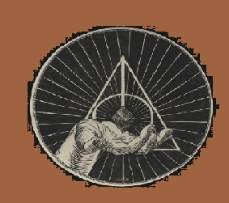

Resurrection Stone

The Resurrection Stone is one of the fabled Deathly Hallows.
In "The Tale of the Three Brothers", it was the second Hallow created,
supposedly by Death himself. It was bestowed upon Cadmus Peverell after he requested,
as his bounty, something with the power to recall loved ones from Death.
According to legend, whoever reunited it with the
other two Hallows (the Elder Wand and the Cloak of Invisibility)
would become the Master of Death.
It was one of the two Hallows known to have been successfully passed down
from generation to generation since Cadmus' time. In 1943 it passed to
the possession of Tom Riddle who unknowingly stole it while it was still
concealed in Marvolo Gaunt's Ring, which he turned into a Horcrux.
The ring was destroyed in 1996 by Albus Dumbledore, but the stone
was placed in Harry Potter's first Golden Snitch until it passed
into the possession of Harry Potter who used it to great
success in the Second Wizarding War.
Hello